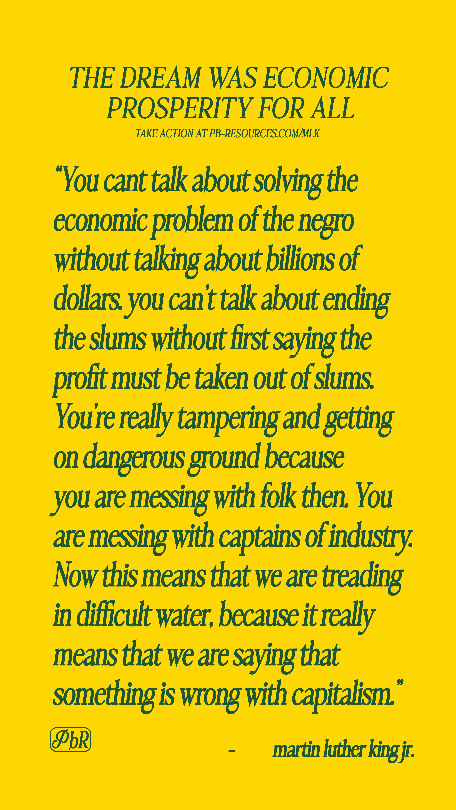
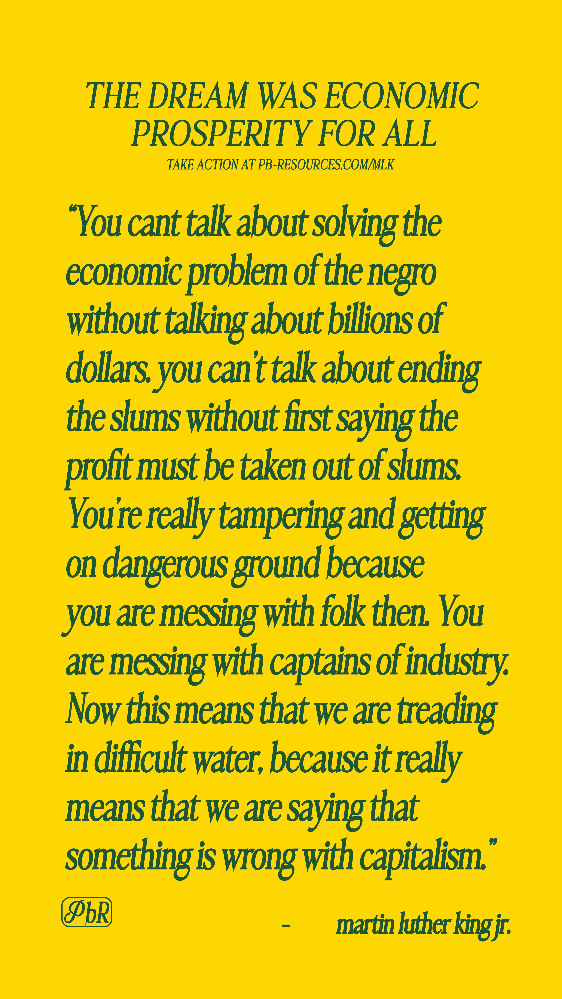

The Legacy of MLK
"I must confess that over the past few years I have been gravely disappointed with the white moderate [...] who paternalistically believes he can set the timetable for another man's freedom; who lives by a mythical concept of time and who constantly advises the Negro to wait for a "more convenient season." Shallow understanding from people of good will is more frustrating than absolute misunderstanding from people of ill will. Lukewarm acceptance is much more bewildering than outright rejection.” - MLK
In commemoration of MLK's enduring legacy, PB-Resources is dedicated to raising awareness of Martin Luther King's lesser known quotes that remain remarkably relevant today. PBR is also equipping individuals with the resources to actively engage in two causes close to MLK's heart: education and voting.
This MLK Day, we invite you to take meaningful action with PBR by sharing these poignant quotes across your social platforms and participating in the actionable steps outlined below. Together, we can honor Dr. King's vision and contribute to positive change in our communities.
Forgotten Quotes
The following images are MLK quote cards you can share on your socials. To download these images on your mobile device, tap and hold the image you prefer. If you're on a desktop computer, right-click on the image you'd like to use and select "Save" to download.
 


Find your Senators
Alabama
Britt, Katie(202) 224-5744
Tuberville, Tommy
(202) 224-4124
Education Reform
Decades after the landmark Supreme Court ruling in Brown v. Board of Education, which deemed "separate but equal" schools unconstitutional, racial and ethnic segregation still deeply affects our educational system. This persistent issue has detrimental effects on the academic achievements of Black students. As evidenced by this report, it results in lower standardized test scores, exacerbates performance disparities between White and Black students, perpetuates economic segregation, with Black students disproportionately attending high-poverty schools. Consequently, the dream of integration and equal opportunities for all Black students, as envisioned by Martin Luther King Jr., remains largely unfulfilled, according to the Economic Policy Institute.
To address this pressing concern, it is essential to engage with your local representatives. Please use the "Find you Seanators" tool above to identify your senator's contact information. Use the provided script to encourage your congressperson to prioritize a comprehensive school integration plan for your district. You may reach out to them via phone or a contact form, ensure your message is personalized to avoid it being flagged as spam.
Script
Hello, I'm [NAME], a constituent calling from [CITY, ZIP]. I'm extremely concerned about the ongoing issue of segregated schools in our district. American schools are as segregated today as they were in the nineteen-sixties, in the years after Brown v. Board of Education. I'm calling to urge [Senator/Representative NAME] to demand bipartisan action towards an integration plan for all schools across the United States. I don't want to see these young people used as a bargaining chip, so I expect my [senator/representative] to make the integration of schools a priority on your agenda. "Separate but equal" schools were not acceptable in the 1960s, and should not be acceptable today. Please pass along my concerns to the [senator/representative]. I'd appreciate if your office could follow up with me with any news related to this issue. I can be reached at [CONTACT INFO]. Thanks so much for taking my [email/call].
Voting Rights
Ronnie Newman, the National Political Director at the ACLU, has emphasized the alarming trend of widespread attacks on the fundamental right to vote across the nation. He highlights that various state legislatures have overtly targeted Black, Latinx, and Indigenous voters. These efforts manifest in attacks on mail-in voting, reductions in early voting periods, and the imposition of unnecessary and cumbersome identification requirements. This situation poses a substantial and immediate threat to the integrity of our democracy. Newman asserts the urgent need for Congress and President Biden to swiftly enact federal voting rights legislation, leaving no room for delays. To delve deeper into the issue of voter suppression, particularly its persistence nearly six decades after the passage of the Voting Rights Act, please explore the following information.
To address this pressing concern, it is essential to engage with your local representatives. Please use the "Find you Seanators" tool above to identify your senator's contact information. Use the provided script to encourage your congressperson to prioritize a comprehensive school integration plan for your district. You may reach out to them via phone or a contact form, ensure your message is personalized to avoid it being flagged as spam.
Script
Hello, I'm [NAME], a constituent calling from [CITY, ZIP]. I'm extremely concerned about state lawmakers introducing more than 500 voter suppression bills to make it harder to get registered and cast our ballots, passing federal voting rights legislation is the single most important thing we can do to protect access to the ballot box. This is worrisome because, Black and Brown voters are being disproportionately prevented from casting a ballot. I'm calling to urge [Senator/Representative NAME] to demand bipartisan support for the Freedom to Vote Act. I don't want to see Black and Brown voters used as a bargaining chip, so I expect my [senator/representative] to oppose any newly introduced legislation that makes it harder for people to vote. Voting is a sacred pillar of our Democracy and needs to be accessible to all. Please pass along my concerns to the [senator/representative]. I'd appreciate if your office could follow up with me with any news related to this issue. I can be reached at [CONTACT INFO]. Thanks so much for taking my [email/call].